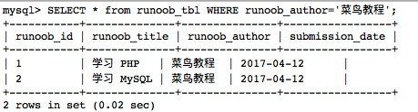
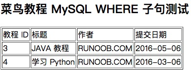

MySQL WHERE 句
MySQL テーブルから SQL SELECT 文をSELECT使用してデータを読み取ります。
テーブルから条件付きでデータを選択する必要がある場合は、SELECT 文に WHERE 句を追加できます。
WHERE 句は、MySQL でクエリ結果をフィルタリングし、特定の条件を満たす行のみを返すために使用されます。
構文
以下は、SQL SELECT 文で WHERE 句を使用してデータテーブルからデータを読み取るための一般的な構文です：
SELECT column1, column2, ... FROM table_name WHERE condition;
パラメータの説明：
column1,column2, ... は選択する列の名前です。もし** を使用する場合は、すべての列を選択します。table_nameは、データをクエリするテーブルの名前です。WHERE conditionは、フィルタリング条件を指定するための句です。
補足説明：
- クエリ文では1つまたは複数のテーブルを使用でき、テーブル間はカンマで,区切り、WHERE 文を使用してクエリ条件を設定します。
- WHERE 句では任意の条件を指定できます。
- AND または OR を使用して、1つまたは複数の条件を指定できます。
- WHERE 句は SQL の DELETE または UPDATE コマンドにも適用できます。
- WHERE 句はプログラミング言語の if 条件に似ており、MySQL テーブルのフィールド値に基づいて指定されたデータを読み取ります。
以下は WHERE 句で使用できる演算子のリストです。
下の表の例では、A を 10、B を 20 と仮定しています。
| 演算子 | 説明 | 例 |
|---|---|---|
| = | 等号。2つの値が等しいかどうかを調べ、等しければ true を返します。 | (A = B) は false を返します。 |
| <>, != | 不等号。2つの値が等しいかどうかを調べ、等しくなければ true を返します。 | (A != B) は true を返します。 |
| > | 大なり記号。左の値が右の値より大きいかどうかを調べ、左の値が右の値より大きければ true を返します。 | (A > B) は false を返します。 |
| < | 小なり記号。左の値が右の値より小さいかどうかを調べ、左の値が右の値より小さければ true を返します。 | (A < B) は true を返します。 |
| >= | 大なりイコール記号。左の値が右の値以上かどうかを調べ、左の値が右の値以上であれば true を返します。 | (A >= B) は false を返します。 |
| <= | 小なりイコール記号。左の値が右の値以下かどうかを調べ、左の値が右の値以下であれば true を返します。 | (A <= B) は true を返します。 |
簡単な例
1. 等しい条件：
SELECT * FROM users WHERE username = 'test';
2. 等しくない条件：
SELECT * FROM users WHERE username != 'runoob';
3. より大きい条件:
SELECT * FROM products WHERE price > 50.00;
4. より小さい条件:
SELECT * FROM orders WHERE order_date < '2023-01-01';
5. 上記条件:
SELECT * FROM employees WHERE salary >= 50000;
6. 以下の条件:
SELECT * FROM students WHERE age <= 21;
7. 組み合わせ条件（AND、OR）:
SELECT * FROM products WHERE category = 'Electronics' AND price > 100.00; SELECT * FROM orders WHERE order_date >= '2023-01-01' OR total_amount > 1000.00;
8. あいまい一致条件（LIKE）:
SELECT * FROM customers WHERE first_name LIKE 'J%';
9. IN 条件:
SELECT * FROM countries WHERE country_code IN ('US', 'CA', 'MX');
10. NOT 条件:
SELECT * FROM products WHERE NOT category = 'Clothing';
11. BETWEEN 条件:
SELECT * FROM orders WHERE order_date BETWEEN '2023-01-01' AND '2023-12-31';
12. IS NULL 条件
SELECT * FROM employees WHERE department IS NULL;
13. IS NOT NULL 条件:
SELECT * FROM customers WHERE email IS NOT NULL;
MySQL データテーブルから指定したデータを読み取りたい場合、WHERE 句は非常に便利です。
主キーを WHERE 句の条件として使用したクエリは非常に高速です。
指定した条件に一致するレコードがテーブルにない場合、クエリはデータを一切返しません。
コマンドプロンプトからデータを読み取る
私たちはSELECTSELECT 文で WHERE 句を使用して、MySQL データテーブル runoob_tbl のデータを読み取ります。
次の例では、runoob_tbl テーブル内の runoob_author フィールドの値が Sanjay であるすべてのレコードを読み取ります：
SQL SELECT WHERE 句
出力結果：

MySQL の WHERE 句の文字列比較は大文字と小文字を区別しません。BINARY キーワードを使用すると、WHERE 句の文字列比較で大文字と小文字を区別するように設定できます。
次の例を参照してください：
BINARY キーワード
例では BINARYBINARYキーワードは大文字と小文字を区別するため、runoob_author='runoob.com'のクエリ条件ではデータはありません。
PHP スクリプトを使用したデータの読み取り
PHP 関数 mysqli_query() および、WHERE 句を付けた同じ SQL SELECT コマンドを使用してデータを取得できます。
この関数は SQL コマンドの実行に使用され、その後 PHP 関数 mysqli_fetch_array() によってクエリされたすべてのデータを出力します。
例
次の例では、runoob_tbl テーブルから runoob_author フィールドの値がRUNOOB.COMであるレコードを返します：
MySQL WHERE 句テスト：
出力結果は次のとおりです：

Adatec
238***0500@qq.com
where：データベースでよく使用されるのは where キーワードで、元のテーブルでのクエリの絞り込みに使用されます。これは制約宣言であり、データを制約するために使用され、結果セットを返す前に機能します。
group by:select クエリで取得した結果セットを特定のフィールドまたは式に従ってグループ化し、グループごとの集合を取得して、各グループから指定されたフィールドまたは式の値を取り出します。
having：where および group by クエリで取得したグループをフィルタリングし、条件を満たすグループ結果を取得するために使用されます。これはフィルタリング宣言であり、クエリが結果セットを返した後にクエリ結果に対して行うフィルタリング操作です。
実行順序
select –>where –> group by–> having–>order by
Adatec
238***0500@qq.com
Marine
695***631@qq.com
参考URL
上の実行順序は誤りです。Google で見つけた順序は次のとおりです。
Marine
695***631@qq.com
参考URL